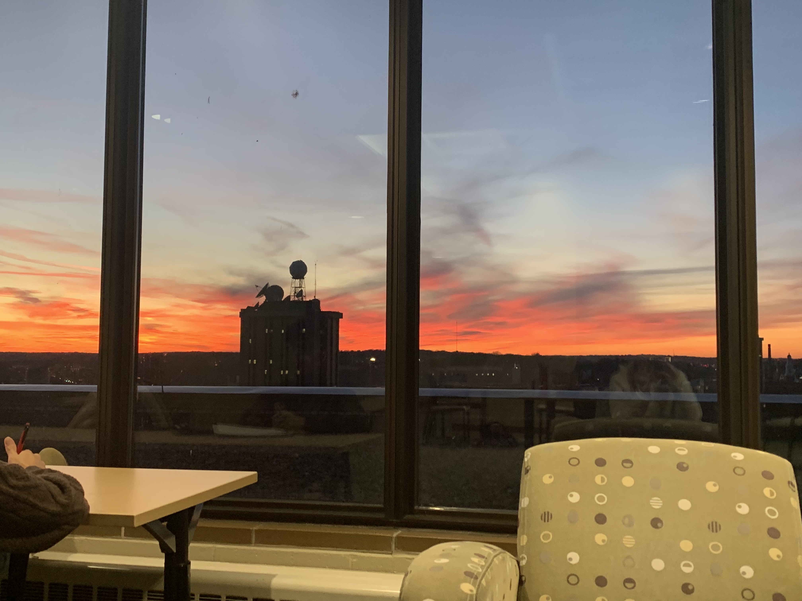

-
Thirteenth Floor of Educational Sciences - The thirteenth floor of the Educational Sciences building is my favorite study spot on campus. You can see both lakes and a large area of downtown Madison and campus. The image here is one I took of a sunset from the thirteenth floor. However, pictures really do not do this spot justice. It is really just best to see it yourself!
- How to Get There:
- Getting to this study spot can be a little tricky however. Once you enter the Educational Sciences building on the corner of West Johnson and North Brooks Street, there is an elevator located on the ground floor. There are also stairs near the elevator, but I prefer to take the elevator. Unfortunately, the elevator does not take you all the way up to the thirteenth floor. The elevator only goes up to the twelfth floor, and once you arrive you will need to take the stairs up to the thirteenth floor, which are located directly behind the elevator.
- Once you arrive to the thirteenth floor, there are many tables and chairs on the thirteenth floor, along with a view that is truly remarkable! There is also a conference room on this floor, but I have never been inside.

-
Information School Library - The Information School Library is another one of my favorite study spots on campus. This study spot has an amazing view of Lake Mendota along with plenty of desks and chairs to study at.
- How to Get There:
- Getting to this study spot is a bit easier than Educational Sciences. However, it can often be overshadowed by College Library right next
door. Instead of entering College Library, to get to the Information School Library, you should keep walking to the left where the
entrance labeled
Floors 4-7
is located. Once you enter these doors, there will be an elevator that can take you up to the fourth floor. If you instead want to take the stairs, immediately to the right of the door to the elevator is a door that leads to a staircase, which will also take you up to floors four through seven. Otherwise, there is a large set of stairs right outside the West Side of Helen C. White which also takes you where you want to go. - After exiting the elevator or stairs on the fourth floor, you will want to walk North to get to the Information School Library, which should be on your left. There are also lots of signs that should point you in the right direction if you get lost.
- Once you arrive, you will see the beautiful Lake Mendota out of the large windows located in the library.
- Getting to this study spot is a bit easier than Educational Sciences. However, it can often be overshadowed by College Library right next
door. Instead of entering College Library, to get to the Information School Library, you should keep walking to the left where the
entrance labeled
-
Memorial Library - This might not be everyone's favorite study spot on campus as it is certainly not the most flashy or updated location. However, I have come to truly enjoy studying in the Memorial Library carrels. Memorial Library is located on Library Mall near the Memorial Union on campus. Memorial Library is a silent library that has seven floor of study spaces available to students. On some of the floors are personal sized carrels where students have a small area to themselves to study. While it might not be the most appealing study spot to some, I have found that I am able to really focus and accomplish a significant amount of work here.
- How to Get There:
- Getting to the Memorial Library is not too difficult as well. You must enter the library on State Street directly across from the University Book Store. Once inside the building, you are required to scan your Student ID upon entry. After you scan your Wiscard, you can walk directly back to the elevators or stairs. Personally, I enjoy studying on the seventh or sixth floor, but there are many to choose from.
- Once on a floor, you can choose to find an empty carrel or there are many desks throughout the library. If you ever get lost, you can find your way back to the elevator or ask someone for directions too. However, once you begin entering the library, it becomes familiar and you will always find your way! Once again, this spot is not for everyone, but I have truly done some of my best studying in Memorial Library as a student here at UW-Madison.